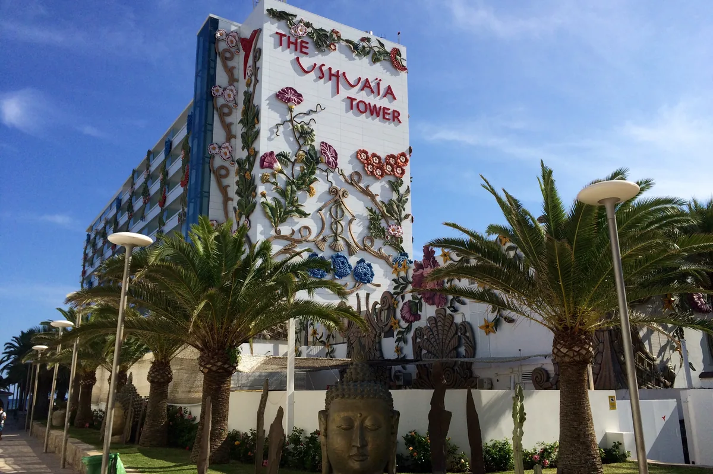

Club guide, Ibiza
Ushuaia Ibiza: tickets, dress code and season events
The open-air club and beach hotel on Platja d'en Bossa: what tickets cost, what the door allows, how the 2026 season runs out, and what 2027 has not yet said.
One club, several questions.
Most people searching for Ushuaia Ibiza want a ticket price, the dress code, the closing-party lineup or a way to get there from Ibiza Town. The official site, which spells the name Ushuaïa, answers most of it across a calendar, a news page and an FAQ.
This guide pulls those answers into one place and dates them. For the other rooms on the island there is the Ibiza clubs guide, and for the town club across the island there is the Pacha Ibiza guide.
Ushuaia is one of 23 rooms in the best clubs in Europe guide.
What is Ushuaia Ibiza?
Ushuaia Ibiza is a daytime club on the Platja d'en Bossa side of the island. Clubtickets says it opened in 2011 as the first entirely open-air venue on Ibiza with a daytime focus. Ibiza Spotlight says it began as a beach club before a five-star hotel was built around it.
The dance floor runs from the stage to the pool. Clubtickets places a VIP area to the right of it and a raised terrace called The Cloud at the back. Planes land low over the crowd, and Ibiza Spotlight says the club sits directly opposite Hï Ibiza, with both owned by The Night League.
Ushuaia Ibiza history
Ibiza Spotlight's 2024 guide names Yann Pissenem and Abel Matutes of the Palladium Group as the people who built the hotel. A Spotlight review from the 2011 opening gave a capacity of 5,000. The same outlet's 2024 guide says 7,000. Its opening and closing parties lean towards the underground side of the lineup, and Spotlight lists Seth Troxler, Sven Väth, The Martinez Brothers, Paul Kalkbrenner and Richie Hawtin among the names that have headlined them. From 2019 the opening party became a 24-hour event shared with Hï Ibiza.
Ushuaia Ibiza tickets
Ushuaia Ibiza tickets are sold through Clubtickets, which the club's FAQ names as its official ticketing platform. The FAQ says tickets cost less in advance than at the door. Clubtickets describes the price of an event ticket as depending on the party, the artist, the entry time and the moment of purchase. Door prices are higher.
| Item | What the sources say |
|---|---|
| Single event ticket | Clubtickets: €30 to €130. Ibiza Spotlight's 2024 guide: €50 to over €100. |
| Opening party 2026 | Clubtickets listed it from €70. |
| VIP ticket | From €500 on Clubtickets, with five drinks, priority access to the garden, the VIP areas except tables, a private bathroom and valet. |
| Stage VIP ticket | From €150 on Clubtickets, with three to four drinks, backstage access and the stage area. |
| Drink pack | The FAQ lists five drinks for €99.99. It covers soft drinks, beer and non-premium spirits. Premium spirits, energy drinks and cocktails are excluded. |
| Drinks at the bar | Clubtickets: vodka lemon from €23, beer €18, water €15. Spotlight: spirit and mixer about €26. |
| Cancellation | Up to 24 hours before, or 72 hours before for opening and closing parties. |
| Entry before a set time | Tickets sold as entry before a time have a cut-off. Standard tickets have none. |
Ushuaia Ibiza price
The Ushuaia Ibiza price depends on the night, so there is no single figure. The official calendar and VIP page read on 5 October 2026 list no prices. The €30 to €130 range comes from Clubtickets and the €50 to over €100 range from Ibiza Spotlight's August 2024 guide. The FAQ says the best time to arrive is before 7pm.
Ushuaia Ibiza dress code
The Ushuaia Ibiza dress code, as the official FAQ lists it, refuses flip flops, tank tops and swimwear. It also refuses sports team merchandise and clothing with offensive ideological messages. The terms of entry add that torsos must be covered. Ibiza Spotlight's version is no flip flops, sports jerseys or swimwear, with torsos covered.
The FAQ says times and rules can change, so check it again before you travel.
Ushuaia Ibiza age
The Ushuaia Ibiza age limit is 18. The FAQ asks for original photo ID, which means an EU identity card or a passport, and a non-EU visitor needs the passport. Minors are refused even with a parent. The other rules on the FAQ are short:
| Rule | What the FAQ says |
|---|---|
| Bags | Nothing larger than a standard handbag. There is no cloakroom and no lockers. |
| Re-entry | Not allowed. A ticket covers every area except VIP and backstage. |
| Photos | Smartphones only. No professional cameras, drones or selfie sticks. |
| Food and drink | Nothing from outside. |
| Access | The venue is wheelchair accessible. |
Ushuaia Ibiza 2026
The Ushuaia Ibiza 2026 season began on Sunday 26 April and ends with the ANTS closing party on Saturday 10 October. The residency table below has the other dates.
Ushuaia Ibiza opening party
The Ushuaia Ibiza opening party took place on Sunday 26 April 2026 with Francis Mercier, HUGEL, Kaz James, MESTIZA, MoBlack and PAUZA, a lineup of Afro and Latin house. The club's March announcement describes an extra-long day-into-night party and a combined ticket with the Hï Ibiza and [UNVRS] openings.
Ushuaia Ibiza events and calendar
The Ushuaia Ibiza calendar on the official site lists one party per night, mostly run as a weekly residency. Ushuaia Ibiza residencies in 2026, from the club's September guide, were these.
| Day | Residency | Notes from the official site |
|---|---|---|
| Monday | David Guetta, F*** ME I'M FAMOUS! | 1 June to 5 October |
| Wednesday | Tomorrowland, with Dimitri Vegas and Like Mike | Closing party on 30 September |
| Thursday | Martin Garrix | 2 July to 24 September, closing party on 24 September |
| Friday | Calvin Harris | No end date was read |
| Saturday | ANTS | Closing party on 10 October |
| Sunday | Swedish House Mafia | Ran to 13 September |
Two special nights sat outside the weekly run. elrow took over on 2 September and HUGEL's Make The Girls Dance on 20 September. The Wednesday night carries the Tomorrowland name.
Ushuaia Ibiza closing party
The Ushuaia Ibiza closing party is two nights in 2026. David Guetta's party closes on Monday 5 October with Afrojack, Matt Sassari and Paul Reynolds. The ANTS closing party follows on Saturday 10 October.
The calendar gives the ANTS day as starting from 12:00, and the club's lineup article describes 11 hours of music. The news page for the same night lists doors from 5pm to 11pm. The two disagree, so check the event page before you leave.
Ushuaia Ibiza lineup
The Ushuaia Ibiza lineup for the 10 October closing party, as the club announced it on 12 August 2026, is made of back-to-back pairings: Vintage Culture with Loco Dice, East End Dubs with Hot Since 82, Andrea Oliva with Patrick Topping, Nic Fanciulli with Butch, Prunk with Fleur Shore, M-High with Marlie, and Eliza Rose with Olive F. Raul Rodriguez plays on his own. The same article carries a count of DJs that contradicts itself, so no total is given here.
Ushuaia Ibiza 2027
No Ushuaia Ibiza 2027 dates had been published when the official site was read on 5 October 2026. Its calendar still showed the 2026 season, and a third-party listing said no official dates existed. The opening party, prices and residencies for 2027 are unknown. Treat any 2027 date you see elsewhere as unconfirmed until it appears on the official calendar. This page will be refreshed when the club publishes them.
Ushuaia Ibiza VIP and table
An Ushuaia Ibiza VIP table is booked through a request form on the official site or by contacting the VIP team at vip@ushuaiaibiza.com or +34 971 12 94 17. The FAQ says a table includes entry, valet, taxes and bottle service up to the booking value. Unused credit cannot be transferred. Food and shisha are not included. The VIP page lists no prices, so the minimum spend for an Ushuaia Ibiza table has to be asked for directly. The only published figures are the Clubtickets entries for VIP tickets in the table above.
Ushuaia Beach Hotel
The Ushuaia Beach Hotel is the building around the club. The Ushuaia Ibiza hotel is a five-star property, and the FAQ says guests of the hotel enter the club free. A hotel guest still needs a separate ticket for Hï Ibiza.

Ushuaia Ibiza address
The Ushuaia Ibiza address is Ctra. Platja d'en Bossa, S/N, 07817 Sant Josep de sa Talaia. The FAQ lists a public car park at an extra cost, valet parking for VIP bookings and a taxi rank beside the venue. Clubtickets adds the Hï Ibiza car parks and paid parking in front.
Clubtickets gives these ways in, and Ibiza Spotlight's 2024 taxi figures were €16 from Ibiza Town and €32 from San Antonio.
| Way in | From Ibiza Town | From San Antonio |
|---|---|---|
| Bus | Line 14, about €2 | Disco Bus Line 3B, about €5 |
| Taxi | About €15, roughly 10 minutes | About €35, roughly 25 minutes |
Ushuaia Ibiza capacity
The Ushuaia Ibiza capacity is 7,000 according to Ibiza Spotlight's 2024 guide. The club's FAQ and ticket pages gave no figure when read on 5 October 2026. The same outlet's 2011 opening review said 5,000, so the number has moved or has never been fixed.
Ushuaia Ibiza FAQ.
What is the Ushuaia Ibiza lineup?
It changes by night and sits on the official events calendar. The 10 October closing party lineup is in the section above.
What time does the Ushuaia Ibiza day party start?
Most nights run from 5pm to 11pm in the open air. The FAQ says Saturday's ANTS runs from 3pm, and the calendar showed the closing party from 12:00.
Does Ushuaia Ibiza have a hotel?
Yes. The Ushuaia Beach Hotel sits around the club, and its guests enter free.
What is the Ushuaia Ibiza age limit?
The Ushuaia Ibiza age limit is 18, with original photo ID.
Is there a dress code at Ushuaia Ibiza?
Yes. No flip flops, tank tops or swimwear, and no bare torsos.
Sources.
- Calendar, closing parties, residencies, opening party, FAQ, VIP terms, address, hours, age, bags, photography and drink pack, read on 5 October 2026: the official Ushuaïa Ibiza site (calendar, news and FAQ). The lineup article is dated 12 August 2026, the September guide 2 September 2026 and the opening-party article 26 March 2026.
- Ticket ranges, VIP ticket contents, bar prices, public transport and taxi figures: Clubtickets, the club's named ticketing platform, read on 5 October 2026.
- Ownership, capacity, history, the 2019 opening party format, prices and dress code notes: Ibiza Spotlight, Insiders' Guide (15 August 2024), read on 5 October 2026.
- Search demand: Google Ads Keyword Planner, United States, bucketed ranges, 5 October 2026.
Continue reading
Read next.
 Rave spots~10 min read
Rave spots~10 min readBerghain: Panorama Bar, Sound and Residents
Berghain explained: the former power station, Panorama Bar upstairs, Halle am Berghain, the Kantine, and the Ostgut Ton label.
Read article → Rave spots~11 min read
Rave spots~11 min readBest Clubs in NYC: Nightclubs for House and Techno, Then and Now
Nowadays, Basement, Public Records, Good Room and Elsewhere: the best clubs in NYC for house and techno now, and the history from the Loft to Output.
Read article → Rave spots~7 min read
Rave spots~7 min readBest Clubs in Tokyo: WOMB, Contact and the Ban on Dancing
WOMB, Contact, Vent and Circus Tokyo: the best clubs in Tokyo for house, techno and bass music, and the 68-year law against dancing that shaped them.
Read article → Rave spots~6 min read
Rave spots~6 min readBest Clubs in Budapest: A38, Instant-Fogas and Turbina
A38's converted cargo ship, the seven rooms of Instant-Fogas and Turbina's techno nights: the best clubs in Budapest now, and the ruin bars several grew out of.
Read article →